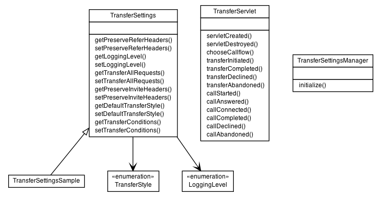

|
||||||||||
| PREV PACKAGE NEXT PACKAGE | FRAMES NO FRAMES | |||||||||

| Class Summary | |
|---|---|
| TransferServlet | This class implements an example B2BUA with transfer capabilities. |
| TransferSettings | |
| TransferSettingsManager | |
| TransferSettingsSample | |
| Enum Summary | |
|---|---|
| TransferSettings.LoggingLevel | |
| TransferSettings.TransferStyle | |
|
||||||||||
| PREV PACKAGE NEXT PACKAGE | FRAMES NO FRAMES | |||||||||